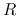
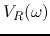
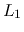
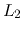
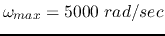

Mark your start and end times. Don't spend more than 3 hours.
Due Monday (4/4) in class.
Mark your name clearly on top of each page. Indicate the total number of
pages submitted.
When solving a problem, list all the steps. In each step, concisely
describe what you are doing in English, then show the calculation and the
result of the step. A final answer, even if correct, without evidence of
the steps leading to the answer will not receive credit.
Problem 1. (50 points)
A source voltage
is applied to the bridge circuit
below, with and . It is known that the voltage at
point a remains the same no matter whether the switch is open or closed.
Find 
Find total impedance between point a and ground.
Find at point a.
Solution:
The bridge is balanced, i.e,
. The total impedance of the bridge
Problem 2. (50 points)
(a) Find the frequency response function of the circuit shown in
the figure, i.e., find the ratio of the voltage across load resistor
and the input sinusoidal voltage in frequency domain.
(b) Similar to a simple RCL series resonant circuit, this circuit
can be used as a band-pass filter to pass signals around its resonant
frequency. Find this resonant frequency at which
 is maximized in terms of the component values , ,
 and .
(c) Different from the simple RCL series resonant circuit, this
circuit also has a stop band, i.e., around a certain frequency
the output voltage is zero. Find this frequency
also in terms of the circuit components.
(d) Given and the two inductors are identical,
determine the values of and , so that
. What is the corresponding stop frequency ?
Solution:
Find total impedance of the circuit:
At the resonant frequency
, the imaginary
part of the impedance is zero (minimum), i.e.,
At the stop frequency , the imaginary part of the
impedance is infinity (maximum), i.e.,